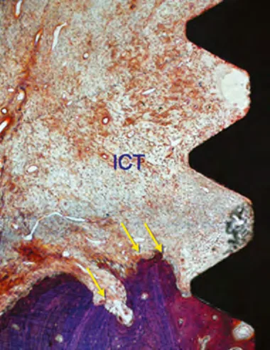
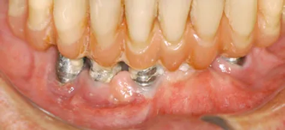

نسخه استخراجشده؛ ترجمه یا تأیید علمی انجام نشده است. وضعیت: captured
اگر فقط یک جمله از این درس را نگه داری، این باشد:
«پیشرفت پریایمپلنتیت به الگویی غیرخطی و شتابگیرنده رخ میدهد.»
پیامدش برای عمل بالینی مستقیم است: سرعتی که امروز میبینی، سرعت فردا نیست. اگر بین دو ویزیت ۱ میلیمتر استخوان از دست رفته، نمیتوانی نتیجه بگیری که سال بعد هم ۱ میلیمتر خواهد بود — ممکن است بسیار بیشتر باشد.
و همین است که مداخلهی زودهنگام را از یک ترجیح به یک ضرورت تبدیل میکند.
مدل تجربی — و آنچه سرعت تخریب را تعیین کرد:
در مدل پریایمپلنتیت تجربی، از لیگاتور برای القای بیماری استفاده میشود. سه عامل «سرعت و بزرگی تخریب بافت را تعیین کردند»:
• اندازه و جنس لیگاتور (پنبه، ابریشم)
• موقعیت کرونوـاپیکالی آن در پاکت
• تعداد دفعات تعویض
مدل پیشرفت خودبهخودی: در این مدل، لیگاتورها برداشته میشوند و محلها بدون مداخله پایش میشوند. در یک بررسی روی ۲۱ محل، در ۱۶ محل تخریب با ادامهی تجمع پلاک پیش رفت و در ۵ محل ضایعه محصور شد و متوقف ماند. و اینجاست که یافتهی مهم ظاهر میشود.
«ارزیابی ۵ ماه پس از برداشتن لیگاتورها نشان داد که از دست رفتن استخوان پیشرفت کرده بود و اندازهی ضایعهی التهابی در بافت همبند در ایمپلنتهای با سطح زبر بزرگتر از ایمپلنتهای با سطح صاف بود.»
و در پژوهشی دیگر: «در طول ۶ ماه پس از برداشتن لیگاتور، مقدار بهطور معنیداری بیشتری از دست رفتن استخوان در اطراف ایمپلنتهای با سطح اصلاحشده نسبت به سطح تراشیده رخ داد.»
نتیجهگیری: «پیشرفت پریایمپلنتیت، اگر درماننشده رها شود، در ایمپلنتهای با سطح نسبتاً زبر بارزتر از ایمپلنتهای با سطح صاف/پولیششده است.»
و «پیشرفت پریایمپلنتیت در ایمپلنتهای با سطوح اصلاحشده بارزتر از آنهایی است که سطوح صاف و اصلاحنشده دارند.»
اما — و این «اما» را نباید نادیده گرفت:
و بلافاصله باید محدودیت را هم گفت: «بنابراین امکان تعیین اینکه آیا نوع خاصی از سیستم ایمپلنت یا سطح ایمپلنت با خطر بیشتری برای پریایمپلنتیت مرتبط است وجود ندارد.» و «باید در نظر داشت که در این مطالعات، تعداد محدودی از انواع ایمپلنت ارزیابی شدند.»
تمایز دقیق را نگه دار: سطح زبر بر سرعت پیشرفت پس از شروع بیماری اثر دارد — این در مدل حیوانی نشان داده شده. ولی اینکه سطح زبر خطر ابتلا را بالا ببرد، ثابت نشده است. دو پرسش متفاوت، دو پاسخ متفاوت.

این بخش یک اصل ساده ولی پرکاربرد دارد که مستقیماً بر تصمیم درمانی اثر میگذارد.
حالت اول — ریج پهن: «در ضایعهی پریایمپلنتیت، ممکن است یک دیوارهی استخوانی باکال و لینگوال باقی بماند و یک نقص محصور و دهانهایشکل (crater-formed) پدید آید.»
حالت دوم — ریج باریک: «برعکس، در محلهایی با ریج باریک، استخوان باکال و لینگوال در طول پیشرفت پریایمپلنتیت تحلیل میرود و از دست میرود.»
چرا این تمایز اهمیت دارد؟ از آنچه در ماژول پیوند خواندی میدانی: نقص محصور با دیوارههای باقیمانده، پیشآگهی بازسازی بهتری دارد تا نقصی که دیواره ندارد.
پس عرض ریجی که ایمپلنت در آن کاشته میشود، شکل نقصی را که سالها بعد ممکن است پدید آید تا حد زیادی تعیین میکند — و با آن، امکان بازسازی را.
این یکی از آن جاهایی است که تصمیم جراحی امروز، گزینههای درمانی ده سال بعد را میسازد.
علائم بالینی که باید بشناسی:
در یک مورد توصیفشده، مخاط اطراف ایمپلنت نشانهی ظاهری التهاب نداشت، ولی پروب کردن محل «عمق پروبینگ حدود ۱۰ میلیمتر، خونریزی هنگام پروب، و ترشح چرک (suppuration)» را نشان داد.
ترشح چرک را نگه دار — یافتهی شایعی در محلهای پریایمپلنتیت است.
و یک اصل روشن: «علائم پریایمپلنتیت به ماهیت عفونی/التهابی ضایعه مربوط میشوند.»
سیر بالینی: «پریایمپلنتیت ابتدا بخش مارجینال بافتهای پریایمپلنت را درگیر میکند و ایمپلنت ممکن است برای دورههای متفاوتی پایدار و در عملکرد باقی بماند.»
این جمله را با آنچه دربارهی لقی خواندی جمع کن: ایمپلنت بیمار میتواند مدتها کار کند و بهنظر برسد که مشکلی نیست. بیمار ممکن است هیچ علامتی حس نکند. و به همین دلیل، تشخیص را باید از راه معاینهی فعال گذاشت، نه با انتظار برای شکایت بیمار.
و متغیری که ظاهر را فریبنده میکند: «همانطور که برای ویژگیهای بالینی موکوزیت پریایمپلنت اشاره شد، عوامل مختلفی مانند مورفولوژی مخاط پریایمپلنت و موقعیت ایمپلنت نیز ممکن است بر ظاهر بالینی التهاب در پریایمپلنتیت اثر بگذارند.»
یعنی ظاهر مخاط میتواند شدت التهاب را کمتر از واقع نشان دهد — و به همین دلیل پروب کردن، با ثبت خونریزی و عمق، بخش جدانشدنی معاینهی ایمپلنت است، نه برداشت چشمی.
